After completing this chapter, you should be able to:
Create various plots using base R graphics
Use ggplot2 for advanced visualizations
Customize plot appearance
Save plots to files
Create publication-quality figures
6.2 Overview
Note
This chapter covers material from the lecture slides: Advanced_Statistics_R_graphics.pdf
6.3 Base R Graphics
6.3.1 Basic Plot Function
The plot() function is the foundation of R graphics:
# Simple scatter plotx <-1:10y <- x^2plot(x, y)
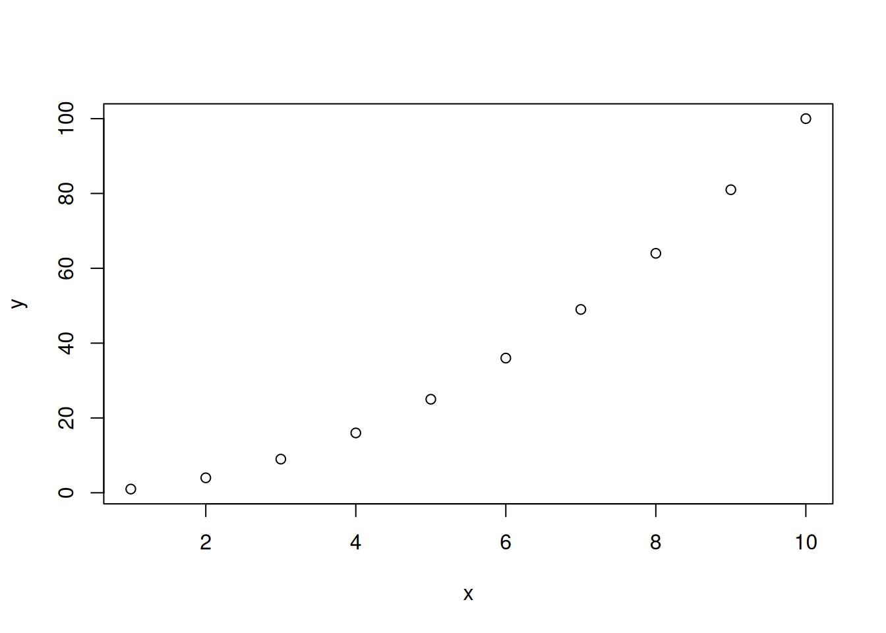
# Customized plotplot(x, y,main ="Quadratic Function", # Titlexlab ="x values", # X-axis labelylab ="y values", # Y-axis labelpch =19, # Point character (solid circle)col ="blue", # Colorcex =1.5# Point size)
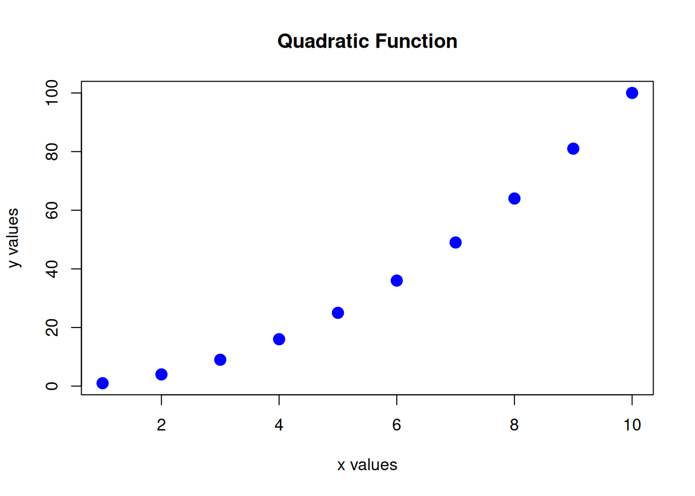
6.3.2 Plot Types
# Line plotplot(x, y, type ="l", col ="red")
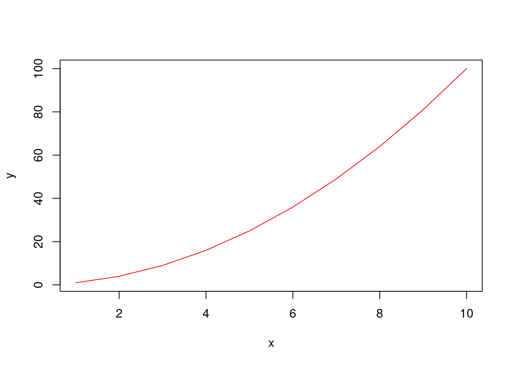
# Both points and linesplot(x, y, type ="b", pch =19)
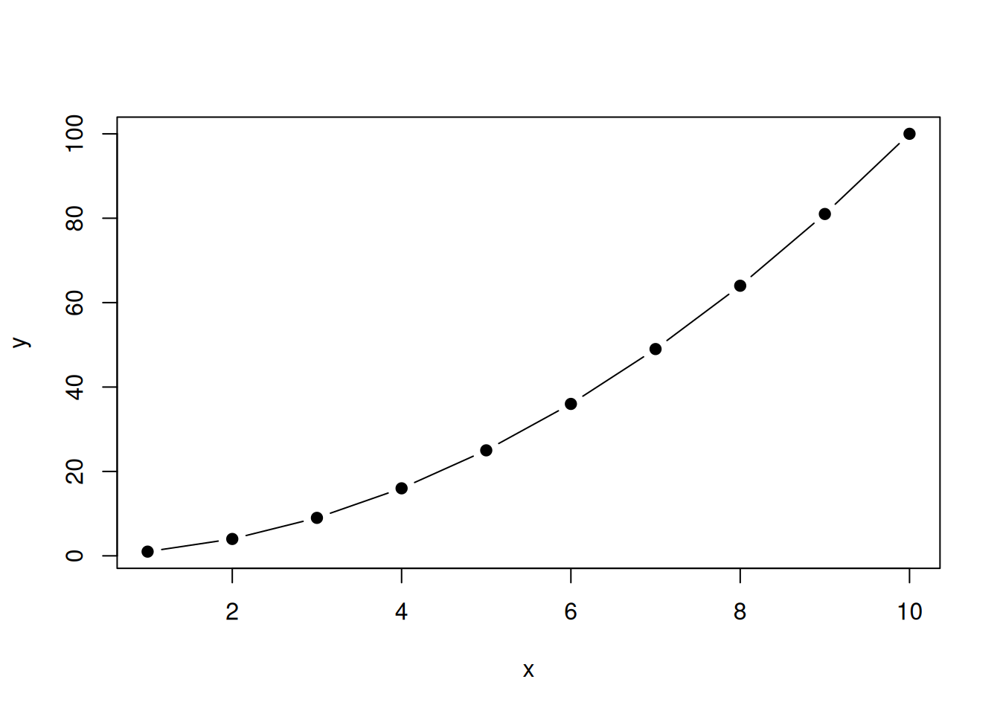
# Common type values:# "p" = points (default)# "l" = lines# "b" = both# "o" = overplotted# "h" = histogram-like# "s" = stairs# "n" = no plotting (just axes)
6.3.3 Point Characters and Colors
# All point typesplot(1:25, rep(1, 25), pch =1:25, cex =2)text(1:25, rep(0.8, 25), labels =1:25)
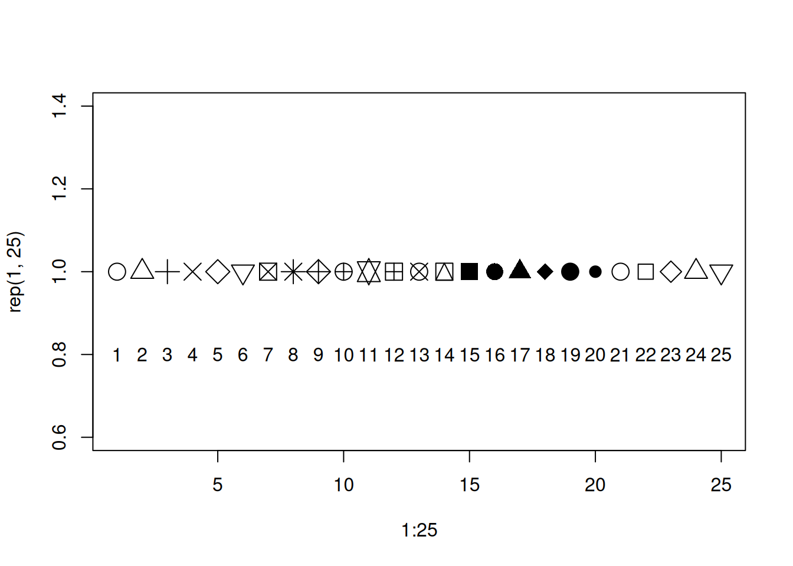
# Colorsplot(x, y, col ="red") # Named color
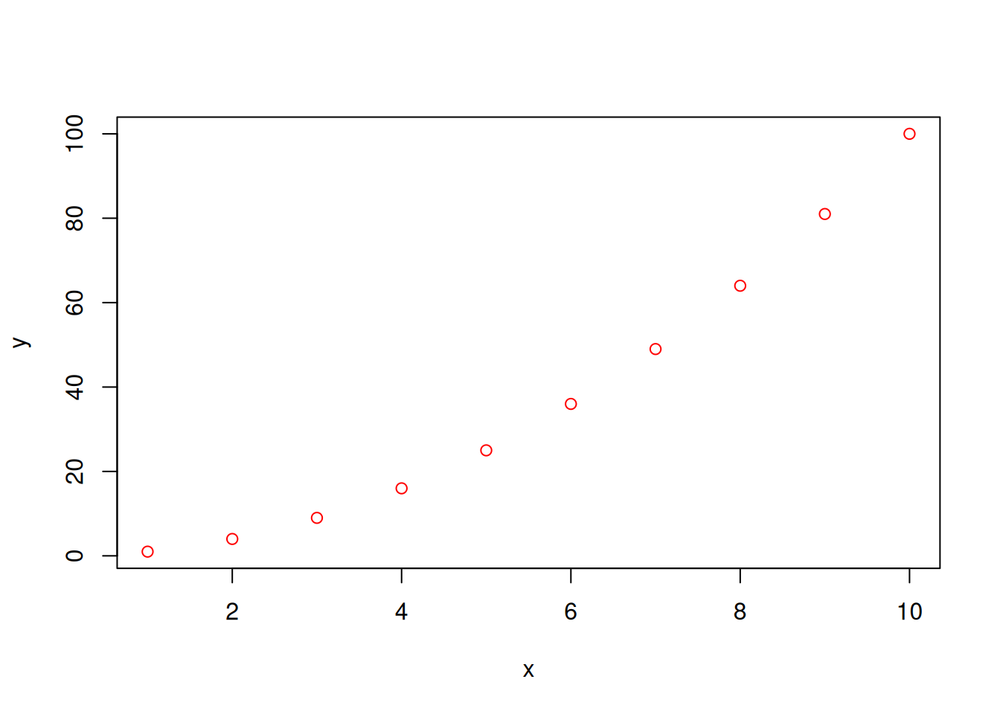
plot(x, y, col ="#FF5733") # Hex color
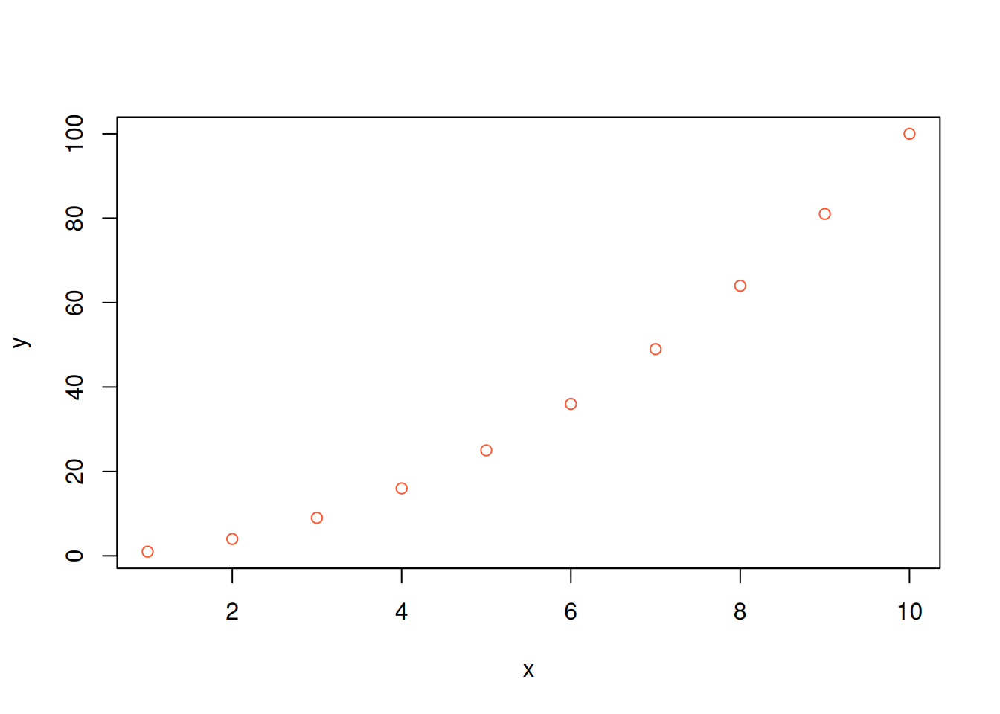
plot(x, y, col =2) # Color index
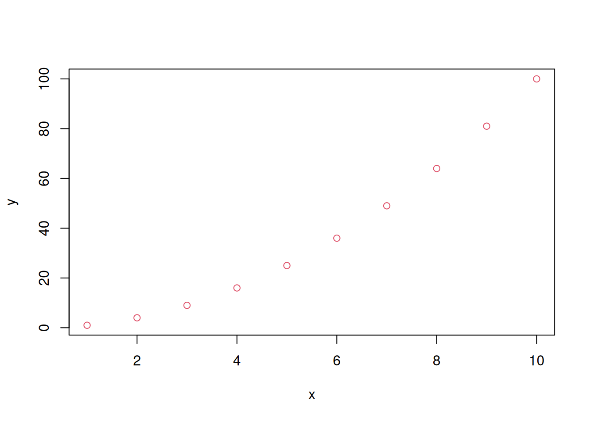
# Color palettescolors <-rainbow(10)plot(1:10, col = colors, pch =19, cex =3)
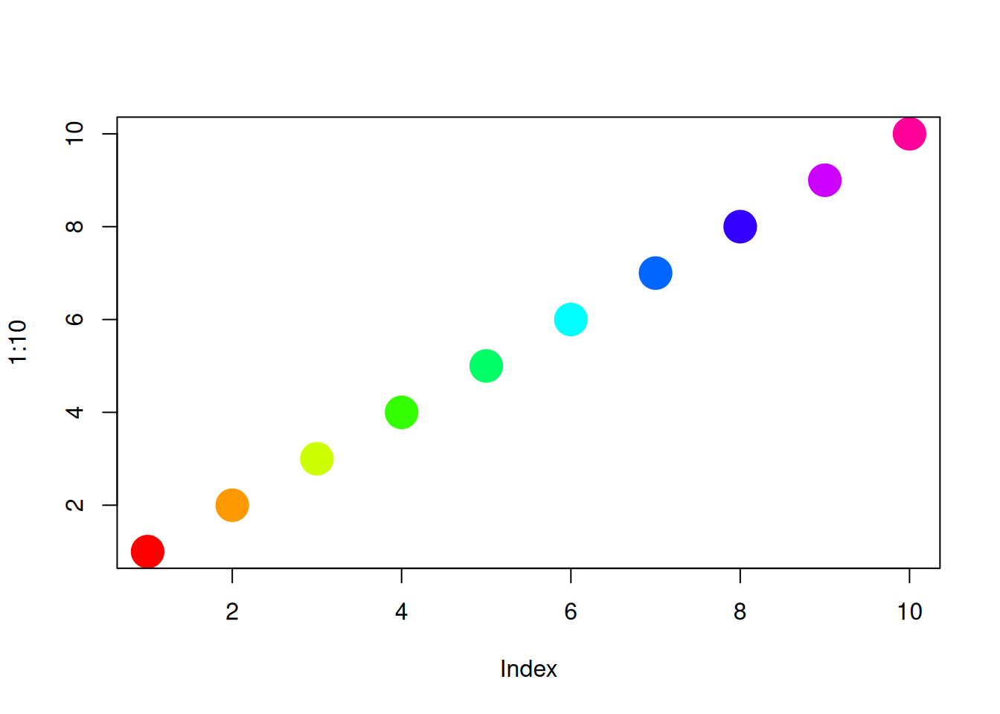
6.3.4 Adding Elements to Plots
# Base plotx <-seq(-3, 3, length.out =100)y <-dnorm(x)plot(x, y, type ="l", main ="Standard Normal Distribution")# Add pointspoints(0, dnorm(0), pch =19, col ="red", cex =2)# Add linesabline(v =0, col ="gray", lty =2) # Vertical lineabline(h =0, col ="gray", lty =2) # Horizontal line# Add texttext(0, dnorm(0) +0.02, "Mean", pos =3)# Add legendlegend("topright",legend =c("Density", "Mean"),col =c("black", "red"),lty =c(1, NA),pch =c(NA, 19))# Add arrowsarrows(-2, 0.2, -1, dnorm(-1), length =0.1)
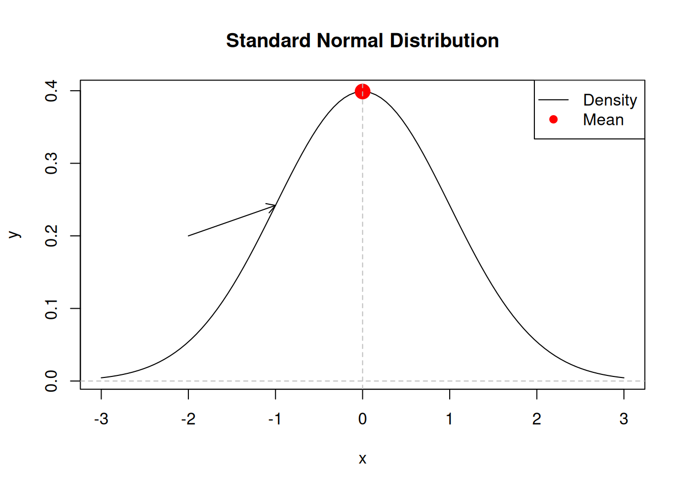
6.3.5 Histograms and Density Plots
# Generate dataset.seed(123)data <-rnorm(1000, mean =50, sd =10)# Histogramhist(data, breaks =30,main ="Distribution of Values",xlab ="Value",col ="lightblue",border ="white")
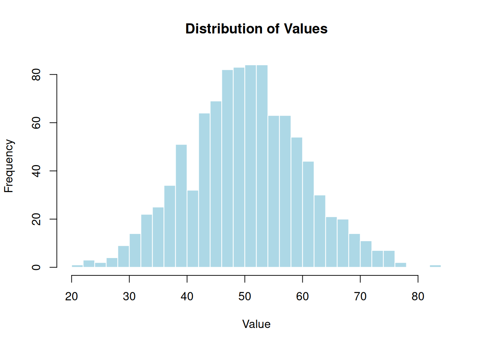
# Add density curvehist(data, breaks =30, probability =TRUE,main ="Histogram with Density",xlab ="Value",col ="lightblue")lines(density(data), col ="red", lwd =2)
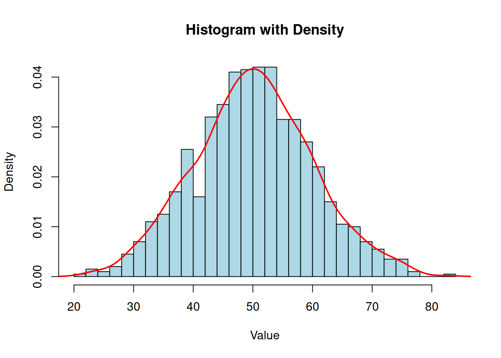
6.3.6 Box Plots
# Generate datagroup1 <-rnorm(100, mean =50, sd =10)group2 <-rnorm(100, mean =55, sd =8)group3 <-rnorm(100, mean =45, sd =12)# Create box plotboxplot(list(Group1 = group1, Group2 = group2, Group3 = group3),main ="Comparison of Groups",ylab ="Value",col =c("red", "green", "blue"))
Base R: plot() is flexible but complex; good for quick exploration
ggplot2: Grammar of graphics approach; better for publication-quality plots
Aesthetics: Map variables to visual properties (color, size, shape)
Geoms: Different plot types (point, line, bar, histogram, etc.)
Themes: Control appearance with pre-built or custom themes
6.7 Exercises
Exercise 1
Create a scatter plot showing the relationship between two variables. Add a trend line, color points by a third variable, and save as a high-resolution PNG.
Exercise 2
Create a histogram with a density curve overlaid. Use proper labels and a nice color scheme.
Exercise 3
Using ggplot2, create a faceted plot showing data for different groups side by side.
6.8 Further Reading
Original Slides: ../Advanced_Statistics_R_graphics.pdf
“ggplot2: Elegant Graphics for Data Analysis” by Hadley Wickham